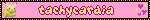
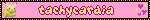

Home
General
We are the Creatures of the Moon, and we collectively go by Yue or Creature. Our collective pronouns are fae/faer and they/them.
DNI
- Anti-Endos
- Minors


About
We are the Creatures of the Moon, and we collectively go by Yue or Creature. Our collective pronouns are fae/they. We collectively use a dragon snow leopard hybrid as our collective online appearance.
We're a monoconscious mediple poly-synkro/polyfrag DID system. We are intersex and are trans-non-binary collectively.
We are mixed origins and are pro-endo. We are polyamorous and are collectively aroflux & asexual.


 


Links
Connections
- Partners
- Taken x2
- Our Stream Server
- Click me!